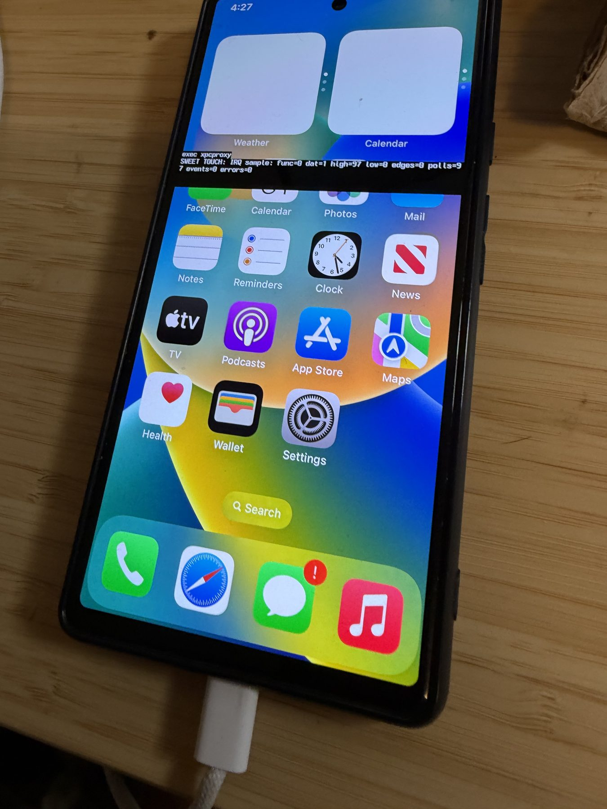
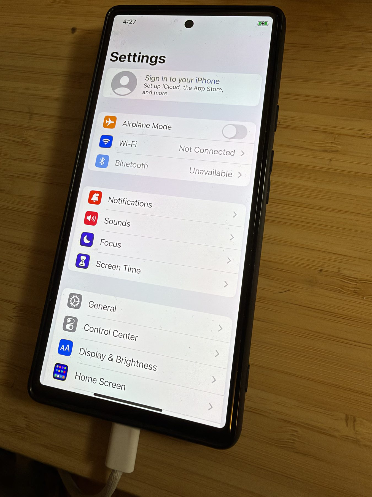
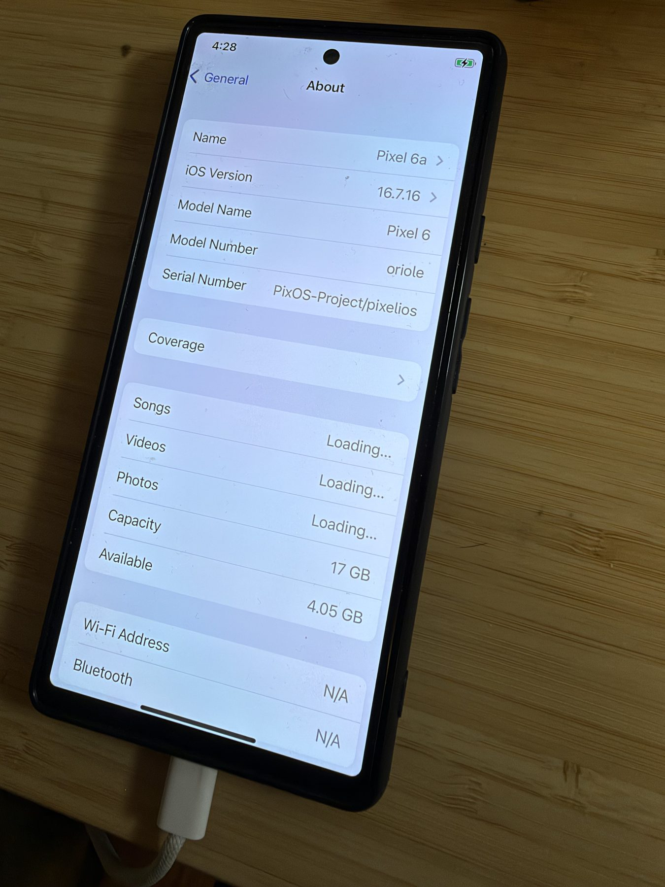
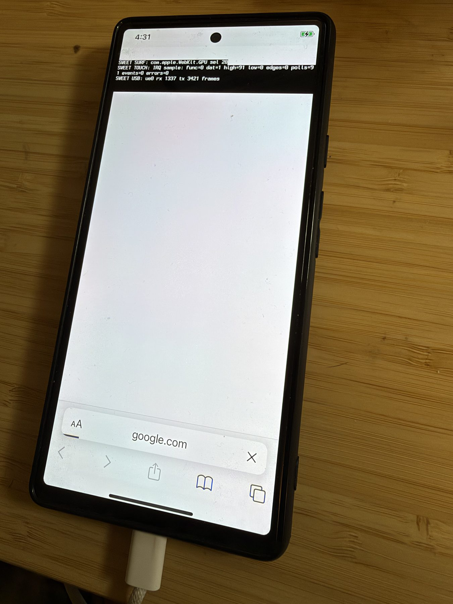
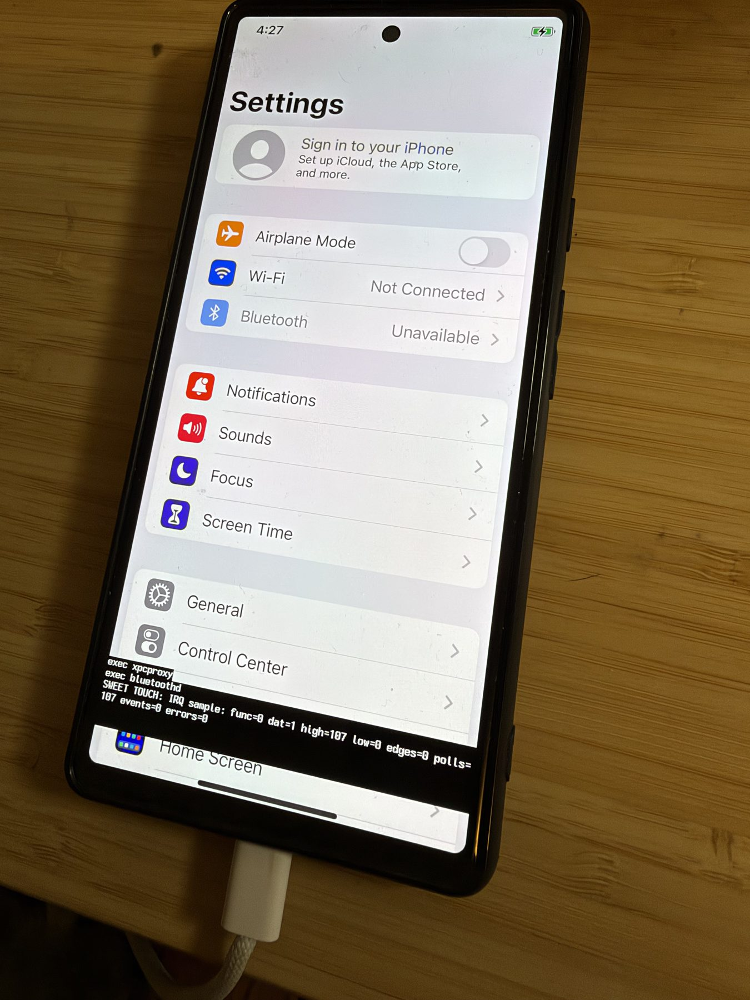
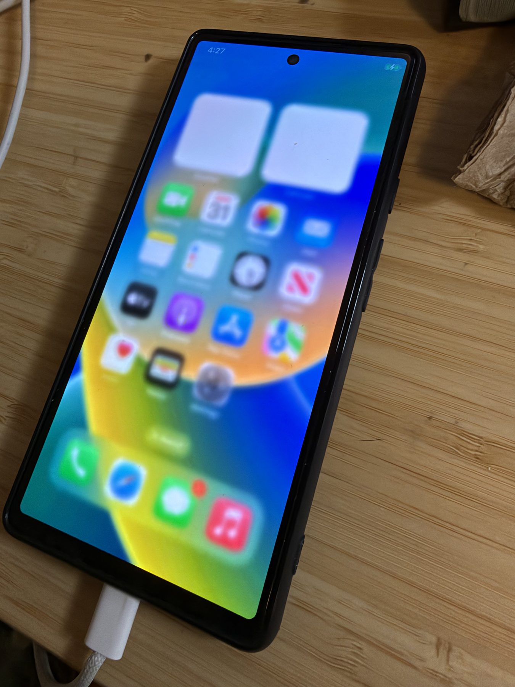
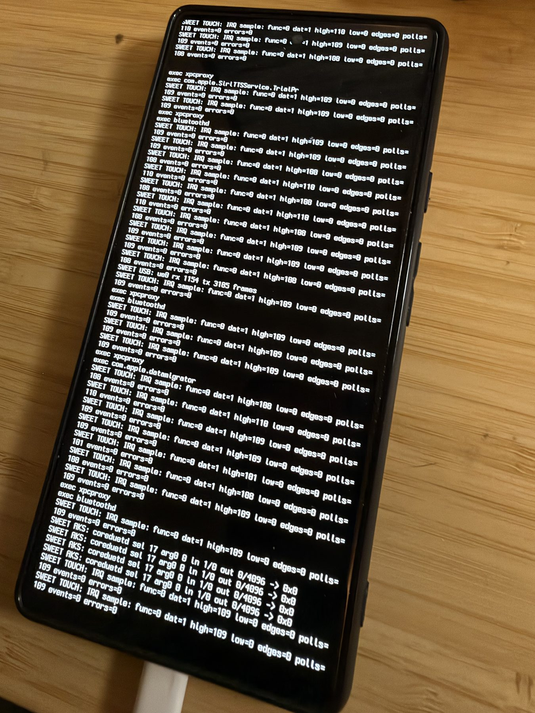

Boot and userland
A temporary boot image hands off through a GS101 shim to patched XNU. The iOS HFSX root mounts and launchd, backboardd, and SpringBoard run.
RESEARCH PAUSED AFTER MILESTONE 01 / OCT 2026
An experimental iOS 16 port for the Google Pixel 6. On one physical phone, touch can unlock the screen, open apps, and navigate from Settings to About. It is extremely slow.
Curiosity-driven research · No practical use case identified · Not a public installer

01 / VERIFIED ON HARDWARE
Milestone 1 is a measured result from one Pixel 6, with explicit boundaries around what has and has not been tested.
A temporary boot image hands off through a GS101 shim to patched XNU. The iOS HFSX root mounts and launchd, backboardd, and SpringBoard run.
The tester swiped into Home, tapped to open apps, and navigated through Settings to General → About. Photos show each stage.
FTM5 events reach XNU HID. Basic gestures and taps work, but the device is extremely slow. Longer sessions and broader interaction remain unverified.
Safari opens, but google.com stayed blank. Debug text can cover the interface, and automatic iOS startup is not implemented.
02 / SYSTEM PATH
The current path is temporary and developer-operated. The iOS root is read from the phone while runtime writes are held in volatile memory.
fastboot boot temporary imagelaunchd → SpringBoard03 / EVIDENCE & LIMITS
These are resized, metadata-stripped copies of tester-supplied physical-device photographs, not simulations or framebuffer reconstructions.
Home, Settings and About appeared on one device in one development configuration. The About screen identifies Model Name “Pixel 6” and Model Number oriole; its editable Name says “Pixel 6a”, which is not a compatibility claim.
The phone is extremely slow. These observations do not establish app compatibility, Internet access or daily-use reliability. Android may enter Recovery after a normal reboot because the experimental iOS root occupies userdata.





